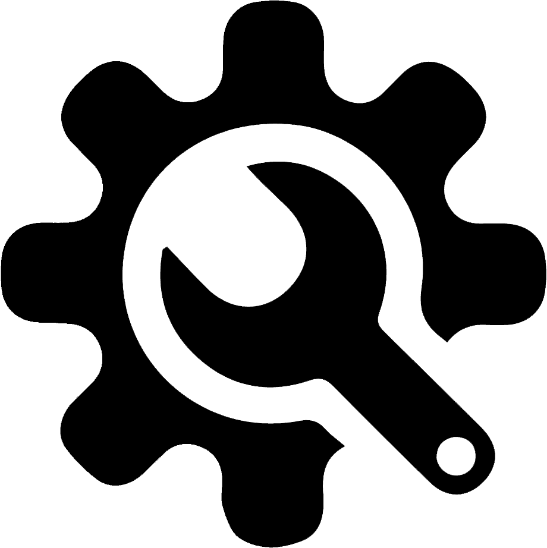

Armado de Equipos
Nos enfocamos en las necesidades de cada cliente, de esta manera logramos cubrir las demandas de cada actividad en particular: uso doméstico, home-office, diseño gráfico, streaming, gamer, diseño CAD/3D, entre otras.
Reparaciones
Contamos con talleres equipados para la reparación de PC’s, notebooks, equipos all-in-one, servidores, monitores, tablets, consolas de juegos, impresoras, etc.

Mantenimiento
Las revisiones periódicas preventivas de los equipos son
fundamentales para extender la vida útil de cada componente y así
optimizar su rendimiento.
Analizamos el estado de cada elemento, actualizaciones de hardware,
software, eliminamos virus, malware y culminamos con una limpieza
general de todo el equipo.

Seguridad
Ofrecemos la instalación de sistemas de cámaras de seguridad.
Disponemos de un amplio catálogo de productos: equipos con visión
nocturna a color, sensores de movimiento, grabación continua,
conexión con varios monitores y la posibilidad de acceder a las
grabaciones desde tu smartphone, tablet, notebook o PC.
Asesoramiento
Comprendemos que el avance tecnológico es cada vez mayor por ello, desde RL Informática, estamos para brindarte asesoramiento sobre las mejores actualizaciones para tus equipos y así mantenerlos al día con tecnología de vanguardia para tu empresa, pyme, centro educativo o uso personal.
Backup
¿La información importante de tus equipos cuenta con el debido
respaldo?.
Nosotros podemos ayudarte para resguardar tus archivos en diversos
sitios, ya sea otro dispositivo o en la nube, y así evitar ciber
ataques o la pérdida accidental de información valiosa.